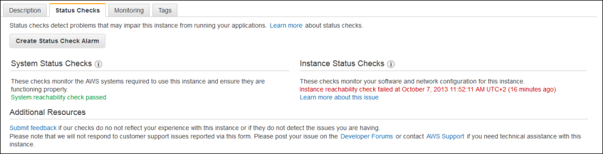

Status Checks for Your Instances
With instance status monitoring, you can quickly determine whether Amazon EC2 has
detected any problems that
might prevent your instances from running applications. Amazon EC2 performs automated
checks on every running
EC2 instance to identify hardware and software issues. You can view the results of
these
status checks to identify specific and detectable problems. This data augments the
information that Amazon EC2
already provides about the intended state of each instance (such as pending, running, stopping)
as well as the utilization metrics that Amazon CloudWatch monitors (CPU utilization,
network traffic,
and disk activity).
Status checks are performed every minute and each returns a pass or a fail status. If all checks pass, the overall status of the instance is OK. If one or more checks fail, the overall status is impaired. Status checks are built into Amazon EC2, so they cannot be disabled or deleted. You can, however create or delete alarms that are triggered based on the result of the status checks. For example, you can create an alarm to warn you if status checks fail on a specific instance. For more information, see Creating and Editing Status Check Alarms.
You can also create an Amazon CloudWatch alarm that monitors an Amazon EC2 instance and automatically recovers the instance if it becomes impaired due to an underlying issue. For more information, see Recover Your Instance.
Contents
Types of Status Checks
There are two types of status checks: system status checks and instance status checks.
System Status Checks
Monitor the AWS systems on which your instance runs. These checks detect underlying problems with your instance that require AWS involvement to repair. When a system status check fails, you can choose to wait for AWS to fix the issue, or you can resolve it yourself. For instances backed by Amazon EBS, you can stop and start the instance yourself, which in most cases migrates it to a new host computer. For instances backed by instance store, you can terminate and replace the instance.
The following are examples of problems that can cause system status checks to fail:
-
Loss of network connectivity
-
Loss of system power
-
Software issues on the physical host
-
Hardware issues on the physical host that impact network reachability
Instance Status Checks
Monitor the software and network configuration of your individual instance. Amazon EC2 checks the health of the instance by sending an address resolution protocol (ARP) request to the ENI. These checks detect problems that require your involvement to repair. When an instance status check fails, typically you will need to address the problem yourself (for example, by rebooting the instance or by making instance configuration changes).
The following are examples of problems that can cause instance status checks to fail:
-
Failed system status checks
-
Incorrect networking or startup configuration
-
Exhausted memory
-
Corrupted file system
-
Incompatible kernel
Viewing Status Checks
Amazon EC2 provides you with several ways to view and work with status checks.
Viewing Status Using the Console
You can view status checks using the AWS Management Console.
To view status checks using the console
-
Open the Amazon EC2 console at https://console.aws.amazon.com/ec2/.
-
In the navigation pane, choose Instances.
-
On the Instances page, the Status Checks column lists the operational status of each instance.
-
To view the status of a specific instance, select the instance, and then choose the Status Checks tab.
 -
If you have an instance with a failed status check and the instance has been unreachable for over 20 minutes, choose AWS Support to submit a request for assistance. To troubleshoot system or instance status check failures yourself, see Troubleshooting Instances with Failed Status Checks.
Viewing Status Using the Command Line or API
You can view status checks for running instances using the describe-instance-status (AWS CLI) command.
To view the status of all instances, use the following command:
aws ec2 describe-instance-status
To get the status of all instances with a instance status of impaired:
aws ec2 describe-instance-status --filters Name=instance-status.status,Values=impaired
To get the status of a single instance, use the following command:
aws ec2 describe-instance-status --instance-idsi-1234567890abcdef0
Alternatively, use the following commands:
-
Get-EC2InstanceStatus (AWS Tools for Windows PowerShell)
-
DescribeInstanceStatus (Amazon EC2 Query API)
If you have an instance with a failed status check, see Troubleshooting Instances with Failed Status Checks.
Reporting Instance Status
You can provide feedback if you are having problems with an instance whose status is not shown as impaired, or want to send AWS additional details about the problems you are experiencing with an impaired instance.
We use reported feedback to identify issues impacting multiple customers, but do not respond to individual account issues. Providing feedback does not change the status check results that you currently see for the instance.
Reporting Status Feedback Using the Console
To report instance status using the console
-
Open the Amazon EC2 console at https://console.aws.amazon.com/ec2/.
-
In the navigation pane, choose Instances.
-
Select the instance.
-
Select the Status Checks tab, and then choose Submit feedback.
-
Complete the Report Instance Status form, and then choose Submit.
Reporting Status Feedback Using the Command Line or API
Use the following report-instance-status (AWS CLI) command to send feedback about the status of an impaired instance:
aws ec2 report-instance-status --instancesi-1234567890abcdef0--status impaired --reason-codescode
Alternatively, use the following commands:
-
Send-EC2InstanceStatus (AWS Tools for Windows PowerShell)
-
ReportInstanceStatus (Amazon EC2 Query API)
Creating and Editing Status Check Alarms
You can create instance status and system status alarms to notify you when an instance has a failed status check.
Creating a Status Check Alarm Using the Console
You can create status check alarms for an existing instance to monitor instance status or system status. You can configure the alarm to send you a notification by email or stop, terminate, or recover an instance when it fails an instance status check or system status check.
To create a status check alarm
-
Open the Amazon EC2 console at https://console.aws.amazon.com/ec2/.
-
In the navigation pane, choose Instances.
-
Select the instance.
-
Select the Status Checks tab, and then choose Create Status Check Alarm.
-
Select Send a notification to. Choose an existing SNS topic, or click create topic to create a new one. If creating a new topic, in With these recipients, enter your email address and the addresses of any additional recipients, separated by commas.
-
(Optional) Choose Take the action, and then select the action that you'd like to take.
-
In Whenever, select the status check that you want to be notified about.
Note
If you selected Recover this instance in the previous step, select Status Check Failed (System).
-
In For at least, set the number of periods you want to evaluate and in consecutive periods, select the evaluation period duration before triggering the alarm and sending an email.
-
(Optional) In Name of alarm, replace the default name with another name for the alarm.
-
Choose Create Alarm.
Important
If you added an email address to the list of recipients or created a new topic, Amazon SNS sends a subscription confirmation email message to each new address. Each recipient must confirm the subscription by clicking the link contained in that message. Alert notifications are sent only to confirmed addresses.
If you need to make changes to an instance status alarm, you can edit it.
To edit a status check alarm
-
Open the Amazon EC2 console at https://console.aws.amazon.com/ec2/.
-
In the navigation pane, choose Instances.
-
Select the instance, choose Actions, select CloudWatch Monitoring, and then choose Add/Edit Alarms.
-
In the Alarm Details dialog box, choose the name of the alarm.
-
In the Edit Alarm dialog box, make the desired changes, and then choose Save.
Creating a Status Check Alarm Using the AWS CLI
In the following example, the alarm publishes a notification to an SNS topic,
arn:aws:sns:us-west-2:111122223333:my-sns-topic, when the instance
fails either the instance check or system status check for at least two consecutive
periods.
The metric is StatusCheckFailed.
To create a status check alarm using the CLI
-
Select an existing SNS topic or create a new one. For more information, see Using the AWS CLI with Amazon SNS in the AWS Command Line Interface User Guide.
-
Use the following list-metrics command to view the available Amazon CloudWatch metrics for Amazon EC2:
aws cloudwatch list-metrics --namespace AWS/EC2 -
Use the following put-metric-alarm command to create the alarm:
aws cloudwatch put-metric-alarm --alarm-nameStatusCheckFailed-Alarm-for-i-1234567890abcdef0--metric-name StatusCheckFailed --namespace AWS/EC2 --statistic Maximum --dimensions Name=InstanceId,Value=i-1234567890abcdef0--unit Count --period 300 --evaluation-periods 2 --threshold 1 --comparison-operator GreaterThanOrEqualToThreshold --alarm-actionsarn:aws:sns:us-west-2:111122223333:my-sns-topicNote
-
--periodis the time frame, in seconds, in which Amazon CloudWatch metrics are collected. This example uses 300, which is 60 seconds multiplied by 5 minutes. -
--evaluation-periodsis the number of consecutive periods for which the value of the metric must be compared to the threshold. This example uses 2. -
--alarm-actionsis the list of actions to perform when this alarm is triggered. Each action is specified as an Amazon Resource Name (ARN). This example configures the alarm to send an email using Amazon SNS.
-